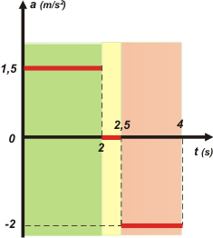

|
NO ME SALEN
PROBLEMAS RESUELTOS DE FÍSICA DEL CBC
(Movimiento variado) |
|

|

|
3.10 - El gráfico dado representa la aceleración
en función del tiempo de un ascensor, que parte
del reposo en planta baja, hasta detenerse en el
segundo piso. |
 |
a - Obtener los gráficos de velocidad y de posición
del coche del ascensor en función del
tiempo.
b - Con el mismo sistema de referencia usado
anteriormente, graficar la aceleración del coche
en función del tiempo en su viaje de regreso a
planta baja. Suponer que el motor y los frenos
proveen aceleraciones de mismo módulo que
durante la subida, y que se alcanza una velocidad
constante (de régimen) también de igual
módulo. Hallar los gráficos del inciso a - para este
nuevo caso, y compararlos.
|
c - El mismo ascensor está instalado en un edificio
de 60 metros de altura. Esbozar el gráfico
posición-tiempo en un viaje de ida y vuelta hasta
el último piso, si se detiene allí 10 segundos. |
|
Mirando el gráfico -que me tomé el atrevimiento de colorear- nos damos cuenta de que el móvil realiza tres movimientos diferentes, encadenados entre sí (el final de uno es el comienzo del otro). El primero y el último son variados (MRUV) y el del medio uniforme (MRU).
Te voy a hacer los gráficos que pide el enunciado en la parte a). Es importante que vos aprendas a hacer los gráficos en forma cualitativa. O sea, con sólo mirar el gráfico de aceleración (el dato del ejercicio) y aunque éste no portase datos numéricos, tendrías que sea capaz de hacer los gráficos de velocidad y posición (sin datos, desde luego) en forma cualitativa. De todos modos, interpreto que el enunciado los pide de forma cuantitativa, es decir, con los datos correspondientes. Para eso podemos utilizar las ecuaciones horarias o utilizar el método de las áreas (voy a hacer esto último). Fijate. |
|
|
Yo te los ordené como corresponde, pero hay que empezar por el de velocidad. El área encerrada bajo la curva de aceleración del primer tramo (área A) representa el aumento de velocidad. Si hacés el cálculo del área (2 x 1,5) vemos que durante esos dos segundos la velocidad aumentó en 3 m/s. Como arrancó del reposo (0 m/s) su velocidad al cabo de los 2 s será 3 m/s. Por eso dibujé una recta ascendente (aceleración constante) que arranca en 0 y termina en 3.
El medio segundo siguiente, el móvil tiene una aceleración nula, de modo que la velocidad se mantiene en 3.
El área bajo (sobre) la curva entre 2,5 y 4 segundos (área B) equivale a la disminución de la velocidad en ese lapso. Veamos: 1,5 x 2 = 3. Como tenía una velocidad de 3 m/s y disminuye en 3 m/s, llega a los 4 segundos con una velocidad de 0 m/s, que es lo que nos anticipaba el enunciado.
Pasemos al de posiciones. Ahora debemos fijarnos en las áreas encerradas bajo la curva del gráfico de velocidad. En el primer tramo se trata de un triángulo (área C). El área de un triángulo se calcula así: base por altura sobre dos. 2 x 3 / 2 = 3, lo que quiere decir que el móvil avanza 3 m, y como arrancó de planta baja a la que le vamos a adjudicar el cero, finaliza los 2 segundos en la posición 3 m. |
 |
|
|
|
La gráfica desde 0 m hasta 3 m ha de ser una curva que arranca sin inclinación y se va inclinando paulatinamente. Para ser más específicos, una parábola.
Luego sigue avanzando a velocidad constante. Si queremos saber cuánto, podemos calcular el área encerrada bajo la curva en ese período (área D). Es un rectángulo (lado por lado) de modo que 0,5 x 3 = 1,5. Si ese movimiento empezó en el metro 3, ha de terminar en el 4,5. La gráfica debe ser una línea recta ascendente que empieza en 3 m y finaliza en 4,5 m.
En el último tramo es ascensor sigue avanzando (¡no retrocede!). Para saber cuánto, podemos calcular el área E. 1,5 x 3 / 2 = 2,25. Eso quiere decir que avanza 2,25 m. Como ese movimiento empieza en el metro 4,5 ha de finalizar en el 6,75. La gráfica ha de ser una curva que arranca con la misma inclinación que tenía la recta anterior y paulatinamente se va acostando hasta terminar en 6,75 m sin inclinación alguna (velocidad nula).
No soy muy amigo de resolver los ejercicios haciendo cálculo de áreas. Pero uno entre cien no viene mal. De todos modos me gustaría que halles las constantes necesarias para armar los gráficos utilizando las ecuaciones horarias. Yo te las armé (mirá qué bueno que soy) pero vos tomate el trabajo de verificar que lo hice bien. |
|
|
| 1ero |
y = 0,75 m/s² . t²
v = 1,5 m/s² . t
|
| 2do |
y = yF1 + vF1 ( t – 2 s)
|
| 3ro |
y = yF2 + vF2 ( t – 2,5 s) – 1 m/s² . ( t – 2,5 s )²
v = vF2 – 2 m/s² . ( t – 2,5 s )
|
|
|
Estas son las ecuaciones que describen TODO el fenómeno del movimiento que te cuenta el enunciado en la parte a |
Los subíndices que utilicé son más que obvios, pero si te toca hacer algo similar en un examen tenés que explicarlo verbalmente o con un esquema. Tampoco hace falta que te explique que vF1 = vF2. Y ya.
|
|
|
| |
|
|
| DESAFIO: Las siguientes situaciones que plantea el enunciado (viajes de ida y vuelta) son sencillas, vos podés resolverlas aunque sea a mano alzada, cualitativamente. Los gráficos en tándem, encolumnados en el orden que yo te dí, con una misma escala de tiempo. Empezás por el de aceleración y dejás para el final el de posiciones. |
|
 |
| |
|
| Todos los derechos reservados.
Se permite su reproducción citando la fuente. Quien no cite la fuente será penado con reclusión en la Antártida y trabajos forzados. Última actualización jul-11. Buenos Aires, Argentina. |
|
|
| |
|